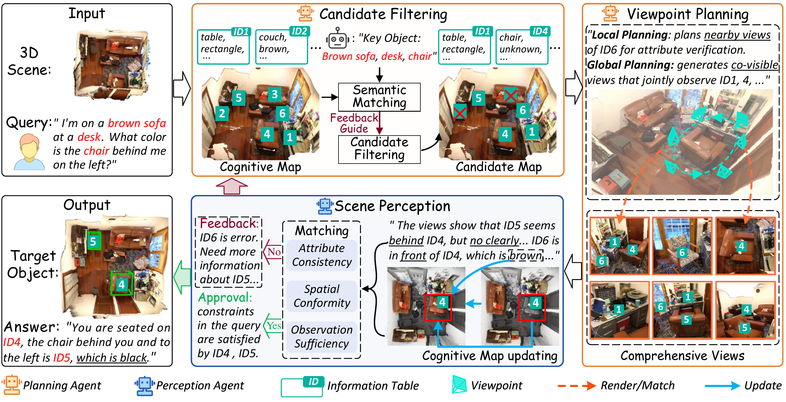
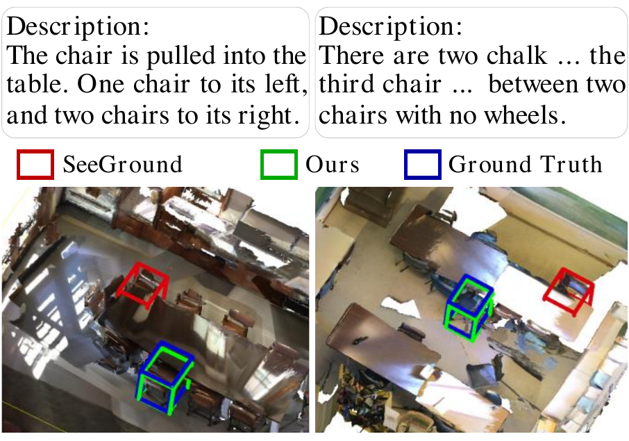
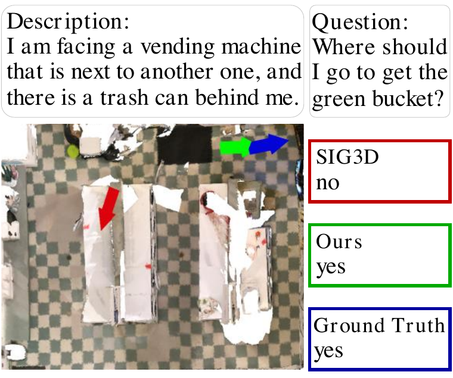
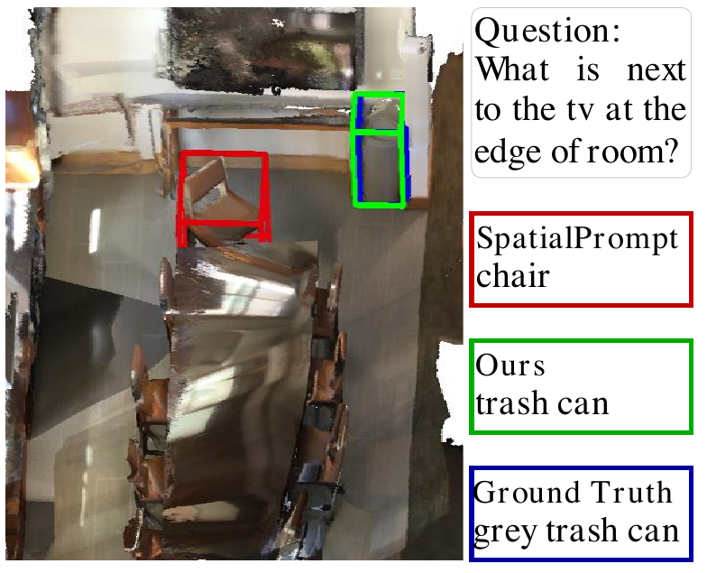

3D Visual Grounding
- ScanRefer Acc@0.5
- +11.1
Recent advancements have explored agentic zero-shot 3D understanding by reformulating it as video keyframe understanding with Multimodal Large Language Models (MLLMs). However, existing methods face an intrinsic bottleneck due to the finite observation perspectives inherent in videos and the implicit perception of 3D scenes. In this paper, we propose a collaborative multi-agent framework that assigns a Planning Agent to handle high-level viewpoint planning and supplement novel perspectives, and a Perception Agent to explicitly summarize the 3D scene into a structured holistic cognitive map. Specifically, Planning Agent first analyzes this cognitive map to determine query-relevant viewpoints and supplements missing critical perspectives to ensure comprehensive observation. Subsequently, Perception Agent documents object-level attributes from these views by assigning consistent instance identifiers across viewpoints, thereby integrating fragmented observations into the holistic cognitive map. In parallel, it provides feedback to filter out mismatched candidate objects and guide subsequent viewpoint planning. Through this closed-loop iterative process, two agents collaboratively figure out candidates until Perception Agent determines that sufficient information has been captured to complete the task. Extensive experiments demonstrate that our method achieves state-of-the-art performance on 6 benchmarks, with improvements of 11.1% Acc@0.5 on ScanRefer, 14.6 BLEU-1 on 3D-assisted dialog, and 2.1 EM on SQA3D.

| Setting | Method | ScanRefer Acc@0.25 | ScanRefer Acc@0.5 | Nr3D Acc@0.25 |
|---|---|---|---|---|
| Zero-shot, 250 queries | ||||
| 250 queries | VLM-Grounder | 51.6 | 32.8 | 48.0 |
| 250 queries | SeqVLM | 55.6 | 49.6 | 53.2 |
| 250 queries | SPAZER | 57.2 | 48.8 | 63.8 |
| 250 queries | Ours | 58.0 | 50.0 | 65.6 |
| Zero-shot, full validation set | ||||
| Full | ZSVG3D | 36.4 | 32.7 | 39.0 |
| Full | SeeGround | 44.1 | 39.4 | 46.1 |
| Full | CSVG | 49.6 | 39.8 | 59.2 |
| Full | Ours | 58.1 | 50.9 | 61.2 |
The full-set comparison tests whether active viewpoint planning transfers beyond the 250-query protocol. Ours raises ScanRefer Overall Acc@0.5 from 39.8 to 50.9 while also improving Nr3D Overall Acc@0.25 from 59.2 to 61.2.
| Method | SQA3D Overall | ScanQA CIDEr | ScanQA BLEU-4 | ScanQA METEOR | ScanQA ROUGE | ScanQA EM |
|---|---|---|---|---|---|---|
| Agent3D-Zero | - | 71.8 | 4.4 | 16.0 | 37.0 | 17.5 |
| SpatialPrompting | 52.7 | 87.7 | 10.9 | 16.9 | 43.4 | 27.3 |
| Ours | 54.8 | 91.1 | 12.3 | 17.4 | 44.5 | 28.7 |
SpatialPrompting already uses object-centric visual prompts; Ours adds explicit scene cognition, improving SQA3D Overall from 52.7 to 54.8 and ScanQA CIDEr from 87.7 to 91.1.
| Method | 3D-assisted Dialog | Task Decomposition | ||||||
|---|---|---|---|---|---|---|---|---|
| B-1 | B-4 | M | R | B-1 | B-4 | M | R | |
| 3D-LLM | 39.0 | 16.6 | 18.9 | 39.3 | 33.9 | 7.4 | 15.9 | 37.8 |
| Agent3D-Zero | 32.8 | 9.8 | 19.3 | 39.3 | 42.0 | 15.5 | 22.9 | 45.1 |
| Ours | 47.4 | 24.0 | 28.6 | 47.3 | 43.8 | 24.9 | 21.0 | 48.8 |
On held-in 3D dialog, Ours surpasses Agent3D-Zero without task-specific supervision, lifting dialog B-1 from 32.8 to 47.4 and B-4 from 9.8 to 24.0.



@article{wang2026agentic,
title={Agentic Collaborative Cognition for Zero-Shot 3D Understanding},
author={Wang, Wenxin and Zhang, Bo and Chen, Feng and Wang, Zixuan and Li, Wen and Li, Changsheng and Lei, Yinjie},
journal={arXiv preprint arXiv:2606.24649},
year={2026},
eprint={2606.24649},
archivePrefix={arXiv},
primaryClass={cs.CV}
}